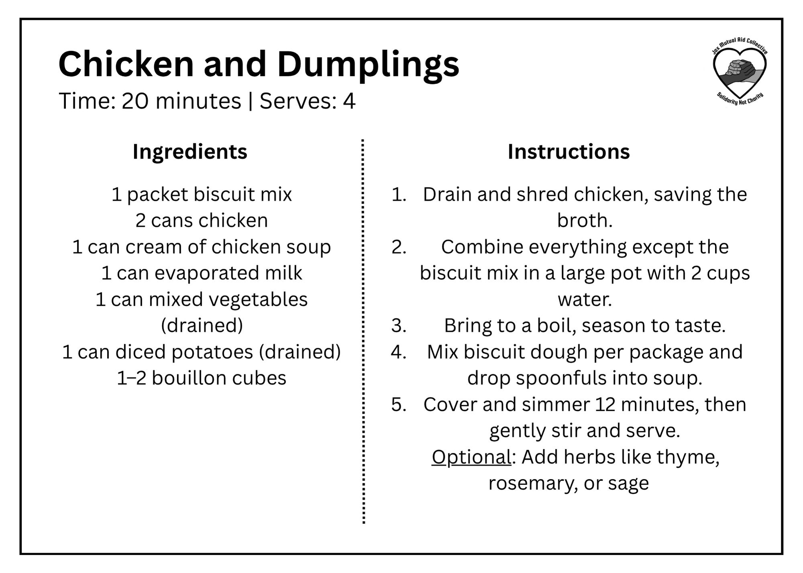

With the suspension of SNAP benefits due to the ongoing government shutdown, nearly 272,000 Floridians — about one in seven people — are at risk of losing access to food assistance. This is not a minor disruption; it’s an emergency.
To meet the moment we must show up for one another in our community. JMAC is starting a weekly Recipe in a Bag Initiative— a local, collective effort to pack shelf-stable ingredients and recipe cards into ready-to-cook recipe kits. This is one among many mutual aid efforts to address the current crisis.
Cafe Resistance
5007 Soutel DrJacksonville, Florida 32208
Mon-Fri 10am-7pm; Sat 10am-5pm
Eartha's Farm
4850 Moncrief Rd. Jacksonville FL. 32209
Acessible 24/7
City Council Food Shares
James Weldon Johnson Park - 500 W. Monroe St Jacksonville FL 32204
Tuesday 11/11 and 11/25 between 5:30-7pm
Black Cat Comics
881 Stockton St. Jacksonville, FL 32204
Outdoor pantry 24/7, overstock indoors Mon-Sat 11am-7pm, Sun 11am-5pm
Cork Art District Open Studio Weekend
Drop off non-perishable food items while exploring a self-guided art experience showcasing over 70 local artists.
Nov 22-23 noon-6pm
2689 Rosselle St Jacksonville 32204
More Information
All non-perishable food items are welcome. However, we encourage donors to purchase all the ingredients needed for a complete recipe. This helps prevent shortages of specific items and ensures families receive everything required to cook a full meal.



To help keep contributions affordable, here's a map of nearby discount stores where you can find many of the needed shelf-stable items at lower prices.
Eartha's Farm & Market Food Distribution
Bring fresh vegetables, fresh meat, canned foods, and dry cereals.
Following Wednesdays from 12pm-6pm:
- Dec 10th
- Jan 21st
- Feb 18th
Eartha's Farm and Market: 4850 Moncrief Rd. Jacksonville, Florida 32209
Food Not Bombs
Bring *vegan* food/clothes/hygiene or just help serve
Every Sunday (3 p.m.)
James Weldon Johnson Park: 135 W Monroe St, Jacksonville, FL 32202
Instagram: @fnbjacksonville
City Council Food Share
Bring food/clothes/hygiene or just help serve
Every 2nd and 4th Tuesday (5:30p)
James Weldon Johnson Park: 135 W Monroe St, Jacksonville, FL 32202
Instagram: @jaxmutualaidcollective or Website: jaxmutualaid.org
Community Dinners at Riverside Church
Bring food to potluck community dinners
Wednesdays 6:30 - 8:30 PM (Nov 19, 26, Dec 3, 10,17)
Riverside Church: 2650 Park St, Jacksonville, FL 32204
Instagram: Instagram: @rivesidechurch_parkandking